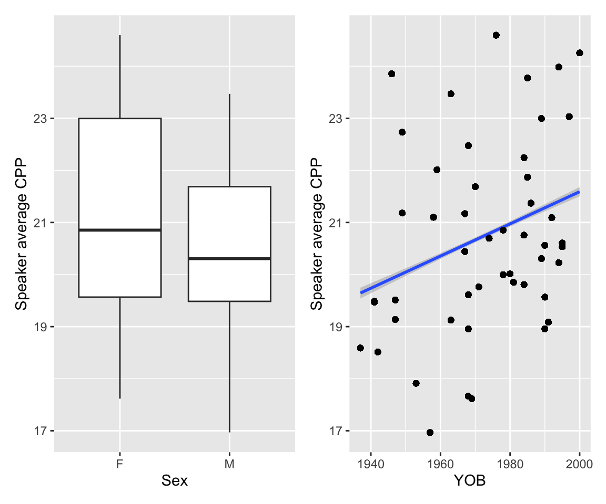

library(brms)
library(lme4)
library(arm)
library(tidyverse)
library(tidybayes)
library(bayestestR)
library(phonTools) # TODO
library(patchwork)
# avoids bug where select from MASS is used
select <- dplyr::select9 Multivariate models
These lecture notes cover topics from:
- Bürkner (2024)
The reading here is short for two reasons, the second more important than the first:
- Students in the 2024 McGill class had a lot to do for the week of these readings
- I’m not aware of any readings on fitting and interpreting multivariate (response) models for linguistic data.
Related readings:
- Barreda and Silbert (2023) Sec. 12.2—discusses multinomial models, which are (under the hood) multivariate models.
- Some sections of McElreath (2020) (and Kurz (2023) translation into brms), e.g. Secs. 5.1.5.3, 11.3.2.1.
- Smith, Sonderegger, and The SPADE Consortium (2024) and associated code and vignette: a more complex example of the type of model fitted below (to vowel formant F1/F2 data) including random effects.
Topics:
- Multivariate models: examples
- Intrinsically-related \(y_1\) and \(y_2\)
- Not-IR \(y_1\) and \(y_2\): testing relatedness
- ``Tying’’ models of \(y_1\) and \(y_2\)
- TODO: Mixture models
- Data = mixture of \(y_1\) and \(y_2\) distributions
- Coming in a later chapter: mediation
- \(y_1\) is a predictor of \(y_2\)
- \(y_1\) mediates the effect of \(x\) on \(y_2\)
9.1 Preliminaries
Load libraries we will need:
Practical notes
If you have loaded
rethinking, you need to detach it before using brms. See Kurz (2023) Sec. 4.3.1.I use the
fileargument when fittingbrmsmodels to make compiling this document easier (so the models don’t refit every time I compile). You may or may not want to do this for your own models. Seefileandfile_refitarguments in?brm.Here I set the
file_refitoption so “brms will refit the model if model, data or algorithm as passed to Stan differ from what is stored in the file.”
options(brms.file_refit = "on_change")I use
chains = 4, cores = 4when fittingbrmmodels below—this means 4 chains, each to be run on one core on my laptop.cores = 4may need to be adjusted for your computer. (You may have fewer or more cores; I have 8 cores, so this leaves 50% free.) You should figure out how to use multiple cores on your machine.Make numbers be printed only to 3 digits, for neater output:
options(digits = 3)9.2 Data
9.2.1 American English vowels
Install the joeysvowels package (Stanley 2020), if you haven’t done so already:
remotes::install_github("joeystanley/joeysvowels")The joeysvowels package provides a handful of datasets, some subsets of others, that contain formant measurements and other information about the vowels in my own speech. The purpose of the package is to make vowel data easily accessible for demonstrating code snippets when demonstrating working with sociophonetic data.
library(joeysvowels)
midpoints <- mutate(midpoints, dur = end - start)We’ll use the midpoints dataset: these are measures of F1 and F2 at vowel midpoint for one speaker’s vowels from many words in a controlled context (surrounding coronal consonants): “odd”, “dad”, “sod”, “Todd”, and so on. Standard F1/F2 vowel plot of all data, with 95% ellipses:1
Code
midpoints %>% ggplot(aes(x = F2, y = F1)) +
geom_point(aes(color = vowel), size = 0.2) +
scale_x_reverse() +
scale_y_reverse() +
stat_ellipse(level = 0.95, aes(color = vowel))
Note how vowel distributions differ both in location (in F1/F2 space) and shape: the direction and size of the ellipse.
Let’s further restrict to just the THOUGHT and LOT vowels for a simple example:
twovowels <- filter(midpoints, vowel %in% c("LOT", "THOUGHT")) %>% droplevels()RQs for this data could be:
- Are LOT and THOUGHT pronounced differently?
- If so, how?
These two vowels are merged for many North American English speakers, but (by self-report) not for this speaker.
Their data for just these vowels looks like:
Code
twovowels %>% ggplot(aes(x = F2, y = F1)) +
geom_point(aes(color = vowel), size = 0.2) +
scale_x_reverse() +
scale_y_reverse() +
stat_ellipse(level = 0.95, aes(color = vowel))9.2.2 Canadian English voice quality
This is data from a project by Jeanne Brown, a PhD student at McGill.
vq_data <- readRDS("jb_creak_data.rds")This is a greatly simplified subset of the data from from Jeanne’s paper on acoustic measures of “creaky voice” in Canadian English-French bilingual speakers.
This subset is just:
- A couple acoustic measures
- English speech only (the dataset also contains French)
- Only one utterance position (66-99% through utterance)
There are 4884 observations.
Every row corresponds to two acoustic measures that correlate with creaky voice, measured for a single vowel, in a corpus of podcast speech:
CPP: cepstral peak prominence- Continuous, where a lower value is expected to correlate with creakiness.
bad_f0_track: whether f0 could not be measured for this vowel- Binary (0/1), where 1 is expected to correlate with creakiness.
Other columns:
Sex,Sex_c: factor and (centered) numeric versions of speaker gender (higher = male)YOB,YOB_c: raw and normalized (mean/2 SD) year of birth of speaker.dev_rate: a measure of speaking rate, relative to the speaker’s mean.prev_seg,foll_seg: what kind of segment precede and follow the vowel:vowel, or various consonants (voiceless stop, etc.), ornone(= word boundary)
The actual research questions are:
- Does speaker
Sexaffect creakiness? - Does speaker
YOBaffect creakiness?
Jeanne’s paper examines these questions on one acoustic measure at a time. We’ll consider a couple additional questions, made possible by jointing modeling the two acoustic measures.
- Do speakers with higher
CPPhave a higher probability ofbad_f0_track? - Do contexts
?
Either one would give insight into whether there is one underlying aspect of voice quality being captured by both measures.
Empirical plots:
p1 <- vq_data %>% group_by(Speaker) %>% mutate(CPP = mean(CPP)) %>%
ggplot(aes(x = Sex, y = CPP)) + geom_boxplot() + labs(y = "Speaker average CPP")
p2 <- vq_data %>% group_by(Speaker) %>% mutate(CPP = mean(CPP)) %>%
ggplot(aes(x = YOB, y = CPP)) + geom_smooth(method = 'lm') + geom_point() + labs(y = "Speaker average CPP")
p1 + p2
## `geom_smooth()` using formula = 'y ~ x'
p3 <- vq_data %>% group_by(Speaker) %>% mutate(bt = mean(bad_f0_track)) %>%
ggplot(aes(x = Sex, y = bt)) + geom_boxplot() + labs(y = "Speaker % bad f0 tracks")
p4 <- vq_data %>% group_by(Speaker) %>% mutate(bt = mean(bad_f0_track)) %>%
ggplot(aes(x = YOB, y = bt)) + geom_smooth(method = 'lm') + geom_point() + labs(y = "Speaker % bad f0 tracks")
p3 + p4
## `geom_smooth()` using formula = 'y ~ x'
TODO: make similar plots by context
If you’re not familiar with these kinds of plot: \(x\) and \(y\) axes go from larger to smaller.↩︎
Note that these data actually come from different words (column
word), so our model should include random effects. I haven’t included random effects just to get the models to fit faster, for pedagogical purposes, and because there are very few observations here anyway (127) relative to model complexity↩︎